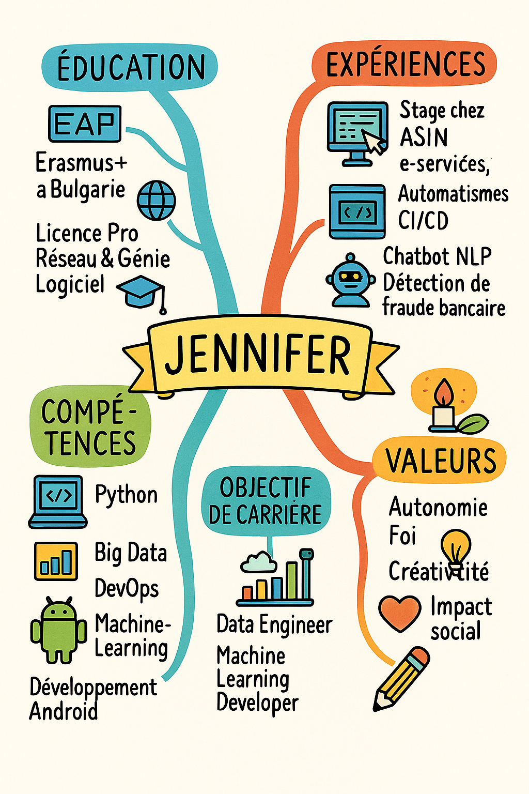

Ma formation & mon projet professionnel
Mon parcours m’a permis de grandir autant techniquement que personnellement. Voici un regard critique et constructif sur les apports de ma formation et ce qu’il me reste à explorer pour aligner ma trajectoire avec mon projet professionnel.
📊 Tableau comparatif
| Ce que j’ai apprécié | Ce qui m’a manqué |
|---|---|
|
• L’approche concrète et projet (Activ’ESAIP, TP en cybersécurité, data science) • La diversité des outils techniques (Spark, Hadoop, Jenkins, Git, SQL, etc.) • L’opportunité Erasmus et l’ouverture internationale • L’encouragement à l’autonomie, à l’engagement associatif (BDA, Cop1) • Le cadre humain et la proximité avec les professeurs |
• Manque d’approfondissement sur des outils IA avancés (ex : NLP, deep learning) • Peu de projets en entreprise sur le long terme • Pas assez de mentoring professionnel personnalisé • Un lien école-entreprise à renforcer pour mieux préparer les stages ou alternances |
🧠 Carte mentale
Voici un visuel représentant les liens entre ma formation, mes expériences et mes aspirations :
